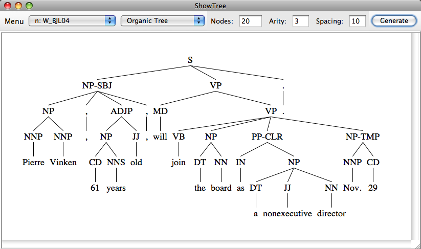

ShowTree implements old and new tree-positioning algorithms. It reads in Penn Treebank format trees, and can generate trees randomly. I wrote this program as the applied part of my undergraduate senior project on tree visualization, in 2009. Even though I wrote it as a student, the tree-positioning code may be useful to someone. See /resources/about.txt (also viewable in the help menu of the program) for an exact list of algorithms implemented.

Please visit the download page.
You can download this project in either zip or tar formats.
You can also clone the project with Git by running:
$ git clone git://github.com/ymasory/ShowTree.gitAlternatively, you can browse the code through GitHub.